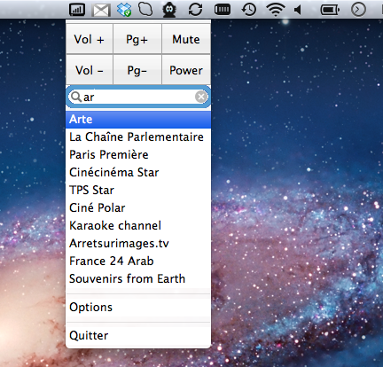
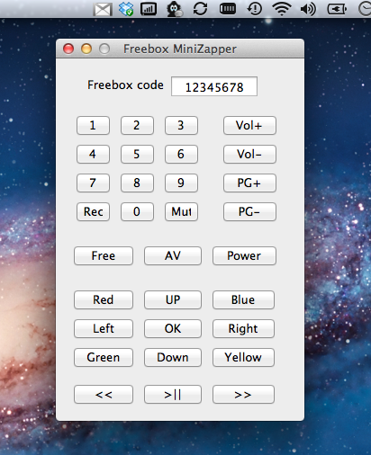

Qu'est-ce?
Freebox Mini Remote est une petite application qui reste dans la status bar du Mac. Elle offre quelques boutons pour le zapping: changement de chaîne et volume et une fonction de zapping avec completion.
On a ainsi accès très facilement et rapidement aux fonctionnalités de zapping. Une télécommande plus complète est accessible dans le menu. Toutes les touches ont des touches de raccourci, vous pouvez donc facilement naviguer dans l'interface de la freebox en utilisant le clavier de votre Mac.
Installation?
Il faut télécharger l'application, la glisser dans le répertoire Application et la lancer. la premiere fois il faudra rentrer dans les options le code de la freebox.
Pour lancer Freebox Mini Remote au démarrage, il faut aller dans les préférences, puis compte, ouverture et y ajouter l'app.
Authors and Contributors
Bertrand Boudaud (@bertrandboudaud)
Ce développement est bénévole. Si vous appréciez l'application, un petit j'aime me ferait plaisir.